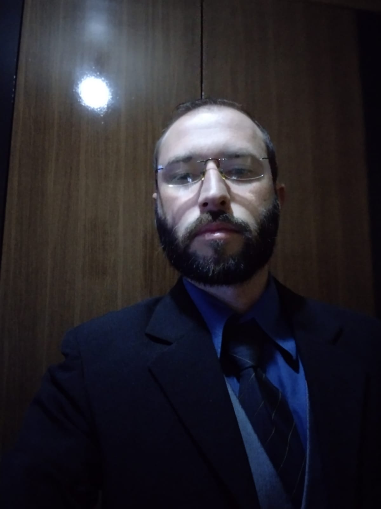

Sobre mim
Olá, me chamo Jônatas, nascido em setembro de 1986 e moro na cidade de Taguatinga norte – DF. Tenho ensino superior completo na área de SEGURANÇA DA INFORMAÇÃO pela (UCB) – Universidade Católica de Brasília. Também o curso técnico em OPERADOR DE COMPUTADOR COM APLICAÇÃO DE FERRAMENTAS DE CLOUD COMPUTING e de desenvolvedor BACK END – PHP. Fiz o de Inglês até o intermediário e pretendo seguir e criar mais experiencias nessa área de tecnologia da informação, no qual a cada dia que se passa tende a aumentar a chance e oportunidades para os profissionais da área.
